Selected Publications

Experimentally realized in situ backpropagation for deep learning in photonic neural networks
This work experimentally verified the optical backpropagation method for training optical neural networks that I published in 2018. Our collaborators built an integrated optical circuit to implement a photonic neural network and measured the gradients of a machine learning task with respect to the network parameters using interference between optical signals.
Sunil Pai, Zhanghao Sun, Tyler W. Hughes, Taewon Park, Ben Bartlett, Ian AD Williamson, Momchil Minkov, Maziyar Milanizadeh, Nathnael Abebe, Francesco Morichetti, Andrea Melloni, Shanhui Fan, Olav Solgaard, David AB Miller
Science (2023)
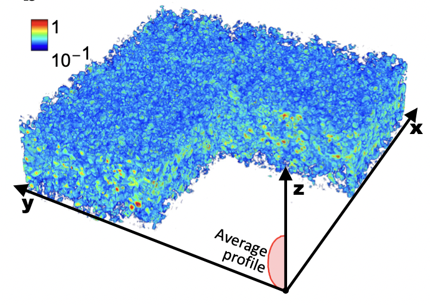
Anderson localization of electromagnetic waves in three dimensions
In this work, we used our electromagnetic simulator to observe direct evidence of Anderson localization in 3D optical systems for the first time, settling a long-standing debate in the physics community. This work required thousands of simulations of light scattering in extremely large ensembles of random spheres to gather statistics to back up these claims.
Alexey Yamilov, Sergey E Skipetrov, Tyler W. Hughes, Momchil Minkov, Zongfu Yu, Hui Cao
Nature Physics (2023)
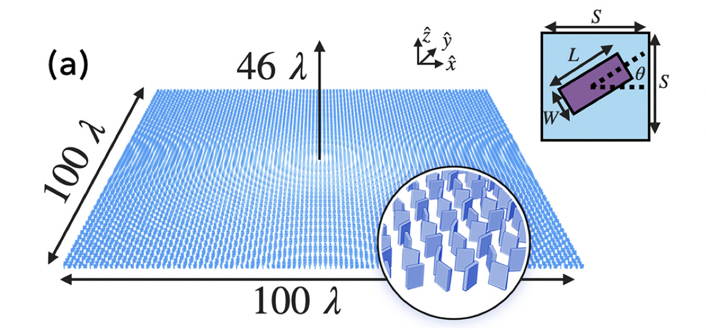
A perspective on the pathway toward full wave simulation of large area metalenses
We used Flexcompute's Tidy3D solver to demonstrate the full wave simulation of a metalens with a diameter of hundreds of wavelengths, including the focal length. In this perspective, we argue that the full accuracy provided by this brute force approach provides a viable pathway towards metalens design.
Tyler W. Hughes, Momchil Minkov, Victor Liu, Zongfu Yu, Shanhui Fan
Applied Physics Letters (2021)
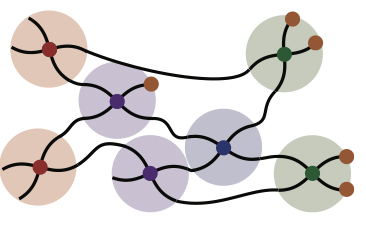
Parallel programming of an arbitrary feedforward photonic network
We introduced a graph-topological approach that generalizes feedforward photonic networks. This framework presents an algorithm that enables them to be programmed efficiently to implement arbitrary linear operations on demand.
Sunil Pai, Ian AD Williamson, Tyler W. Hughes, Momchil Minkov, Olav Solgaard, Shanhui Fan, David AB Miller
IEEE Journal of Selected Topics in Quantum Electronics (2020)
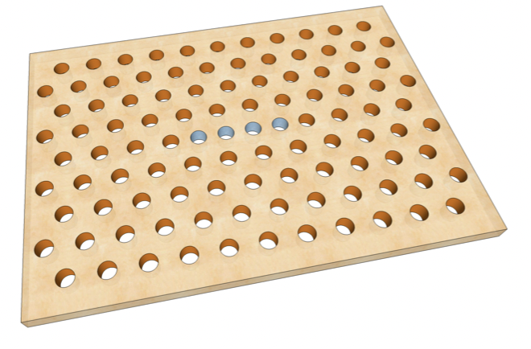
Inverse design of photonic crystals through automatic differentiation
We implemented the plane-wave expansion and the guided-mode expansion methods using an automatic differentiation library, and used this gradient information to optimize the dispersion of a photonic crystal waveguide and the quality factor of an ultrasmall cavity in a lithium niobate slab.
Momchil Minkov, Ian AD Williamson, Lucio C Andreani, Dario Gerace, Beicheng Lou, Alex Y Song, Tyler W. Hughes, Shanhui Fan
ACS Photonics (2020)
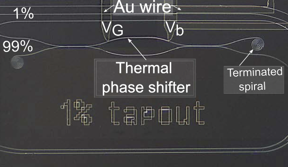
Experimental realization of arbitrary activation functions for optical neural networks
We experimentally demonstrated an on-chip electro-optic circuit for realizing arbitrary nonlinear activation functions for optical neural networks (ONNs). The circuit operates by converting a small portion of the input optical signal into an electrical signal and modulating the intensity of the remaining optical signal.
Monireh Moayedi Pour Fard, Ian AD Williamson, Matthew Edwards, Ke Liu, Sunil Pai, Ben Bartlett, Momchil Minkov, Tyler W. Hughes, Shanhui Fan, Thien-An Nguyen
Optics Express (2020)

Forward-Mode Differentiation of Maxwell's Equations
Differentiating electromagnetic simulations is useful for photonic device design, optimization, and sensitivity analysis. In this paper we provide a method for computing exact derivatives of Maxwell's Equations based on 'forward-mode differentiation', which should find use in several applications.
Tyler W. Hughes, Ian A.D. Williamson, Momchil Minkov, and Shanhui Fan
ACS Photonics (2019)
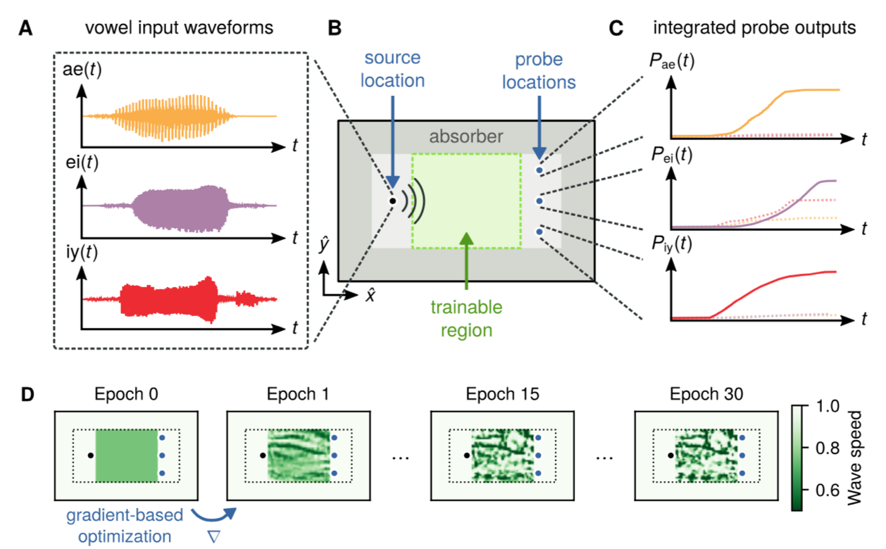
Wave Physics as an Analog Recurrent Neural Network
We show that wave-based systems, describing many physical phenomena, map to the mathematics of recurrent neural networks. Using this correspondence, we show that one can train wave systems to passively perform machine learning tasks on sequential data, such as raw audio or optical signals, using simple propagation of waves through a structure.
Tyler W. Hughes*, Ian A.D. Williamson*, Momchil Minkov, and Shanhui Fan
Science Advances (2019)
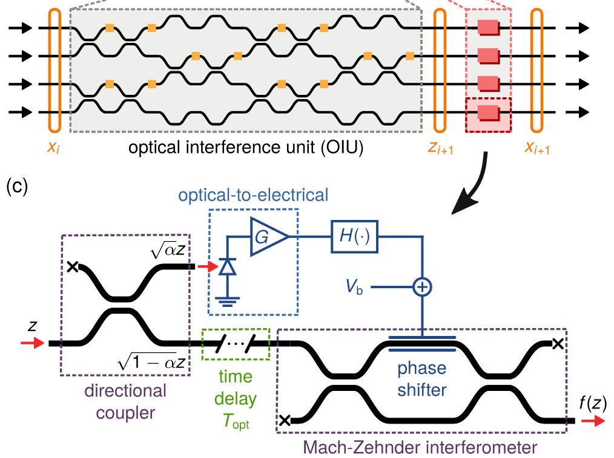
Reprogrammable Electro-Optic Nonlinear Activation Functions for Optical Neural Networks
A major challenge to optical neural networks is the lack of a simple scheme for optical nonlinearities. In this work, we propose the use of a hybrid electro-optic circuit, which enables nonlinear activation functions at low optical power. We wrote an open-source optical neural network simulator and demonstrate that this class of activation function performs well on standard machine learning problems.
Ian A.D. Williamson, Tyler W. Hughes, Momchil Minkov, Ben Bartlett, Sunil Pai, and Shanhui Fan
IEEE Journal of Selected Topics in Quantum Electronics (Invited Paper, 2019)
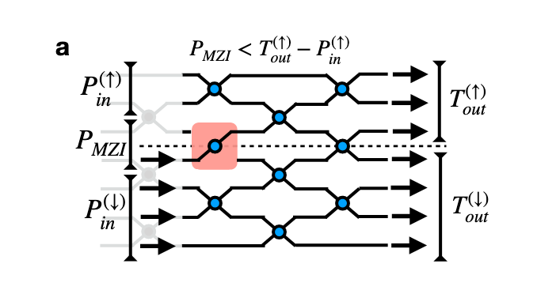
Reconfigurable Photonic Circuit for Controlled Power Delivery to Laser-Driven Accelerators on a Chip
We present a system for automatic control of the laser power to an accelerator on a chip. Our scheme uses a mesh of Mach-Zehnder interferometers on chip, which may be sequentially and efficiently tuned to optimize power distribution in the circuit. This provides a long-term strategy for extended energy gain from these accelerators and novel applications.
Tyler W. Hughes, R. Joel England, and Shanhui Fan
Physical Review Applied (2019)
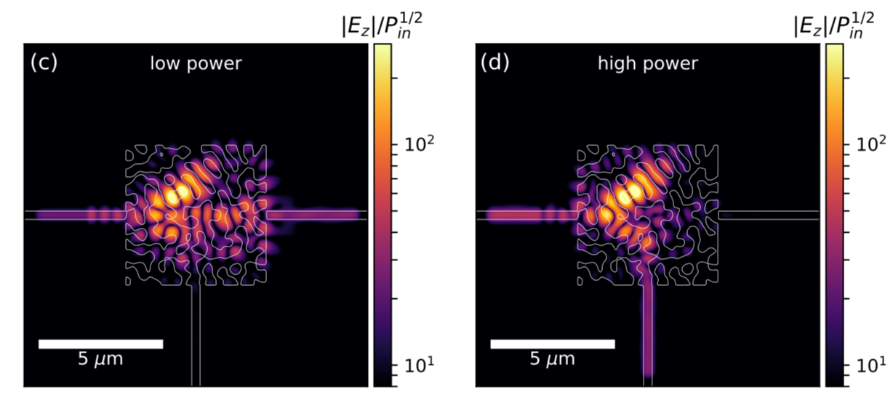
Adjoint Method and Inverse Design for Nonlinear Nanophotonic Devices.
Adjoint methods are used to compute gradients of optical device performance with respect to several design degrees of freedom, allowing for efficient large-scale inverse design and optimization of novel devices. Here we extend this formalism to the frequency-domain analysis of nonlinear optical devices. We use our method to design photonic power switches and provide an open source software package for inverse design.
Tyler W. Hughes*, Momchil Minkov*, Ian A.D. Williamson, and Shanhui Fan
ACS Photonics (2018)
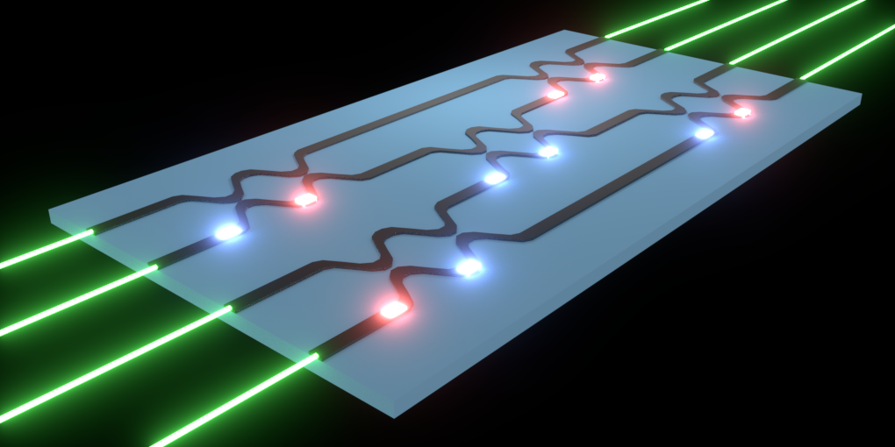
Training of Photonic Neural Networks through In-Situ Backpropagation and Gradient Measurement.
We show how to efficiently train artificial neural networks implemented with integrated photonic circuits. To accomplish this, we introduce a novel method for measuring the adjoint sensitivity directly as an intensity measurement in a general photonic device. This method allows one to physically implement the 'backpropagation algorithm' using optical signals.
Tyler W. Hughes, Momchil Minkov, Yu Shi, and Shanhui Fan
Optica (2018)
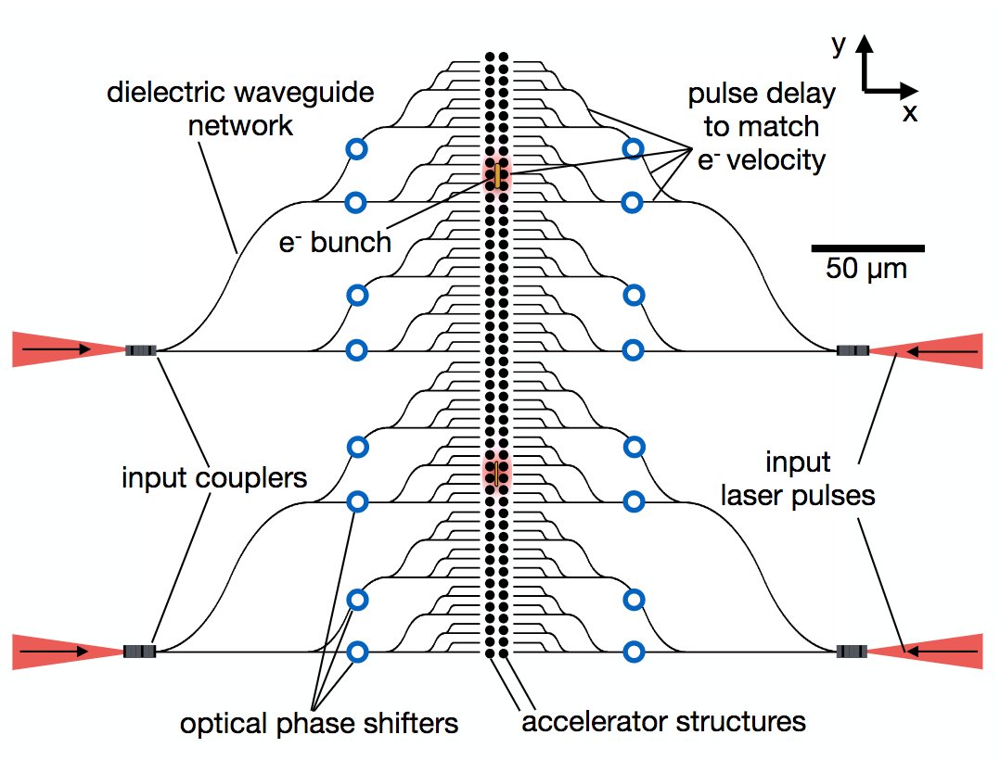
On-Chip Laser Power Delivery System for Dielectric Laser Accelerators
We propose an integrated system, based on dielectric waveguides, for driving particle accelerators on a chip. This is a promising way to scale this technology to larger lengths and higher energy gains, enabling practical applications.
Tyler W. Hughes, Si Tan, Zhexin Zhao, Neil V. Sapra, YunJo Lee, Kenneth J. Leedle, Huiyang Deng, Yu Miao, Dylan S. Black, Olav Solgaard, James S. Harris, Minghao Qi, Jelena Vuckovic, R. Joel England, Robert L. Byer, and Shanhui Fan
Physical Review Applied (2018)
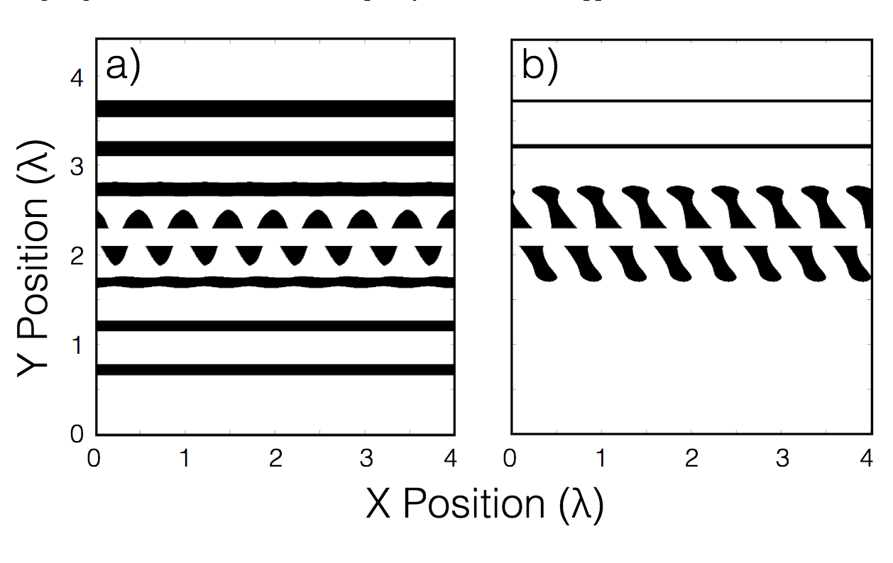
Method for Computationally Efficient Design of Dielectric Laser Accelerator Structures.
We show how to systematically inverse design a dielectric accelerator structure using the 'adjoint method'. Here the goal is to create a standing wave pattern that maximizes the energy gain achieved by a charged particle moving through the structure. Using this formalism, we show that there is an equivalence between maximizing energy gain and maximizing the electron radiation.
Tyler W. Hughes, Georgios Veronis, Kent Wootton, R. Joel England, and Shanhui Fan
Optics Express (2017)
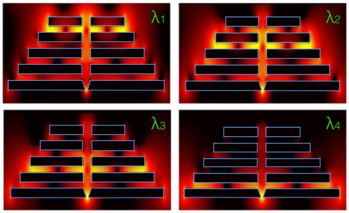
Plasmonic Circuit Theory for Multiresonant Light Funneling to a Single Spatial Location
By modeling metallic nanostructures as simple electronic circuits, we show how one may systematically design them to focus light at the same position for multiple, independently tunable frequencies. We present a multi-layered plasmonic structure that accomplishes high field enhancement for four frequencies using light funneling between metal-insulator-metal gap modes. This structure has potential applications in the study of biological molecules and spectroscopy.
Tyler W. Hughes and Shanhui Fan
Nano Letters (2016)
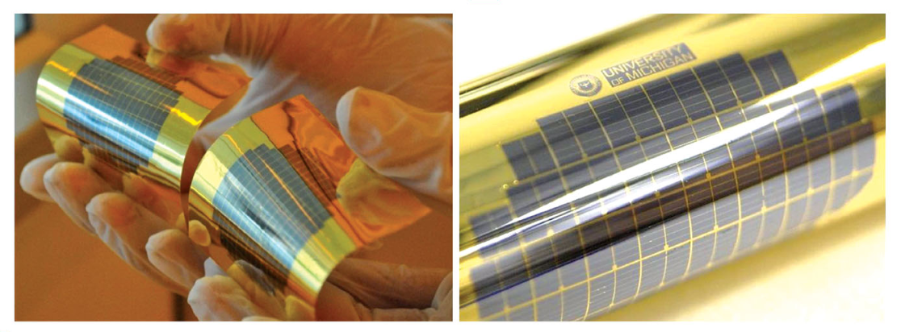
Non-Destructive Wafer Recycling for Low-Cost Thin-Film Flexible Optoelectronics
III-V materials, such as GaAs, have great opto-electronic properties, which makes them ideal choices for solar cells, LEDs and other devices. However, their extremely high cost limits their use in practice. In this work, we demonstrated a method for fabricating thin-film III-V devices by lifting off the thin-film active region and subsequently reusing the expensive substrate, leading to a dramatic reduction in their potential cost.
Kyusang Lee, Jeramy D. Zimmerman, Tyler W. Hughes, and Stephen R. Forrest
Advanced Functional Materials (2014)
show more
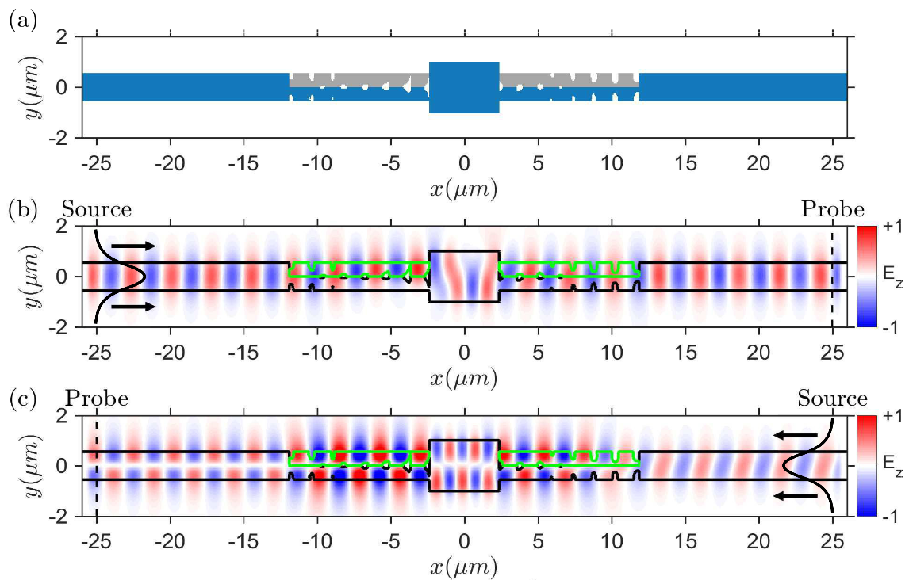
Adjoint-Based Optimization of Active Nanophotonic Devices
We show how the adjoint method may be used to inverse design periodically modulated optical devices. Our approach is based upon the multi-frequency finite-difference frequency-domain method (link). As a demonstration, we numerically design and optimize a compact optical isolator.
Jiahui Wang, Yu Shi, Tyler W. Hughes, Zhexin Zhao, and Shanhui Fan
Optics Express (2018)
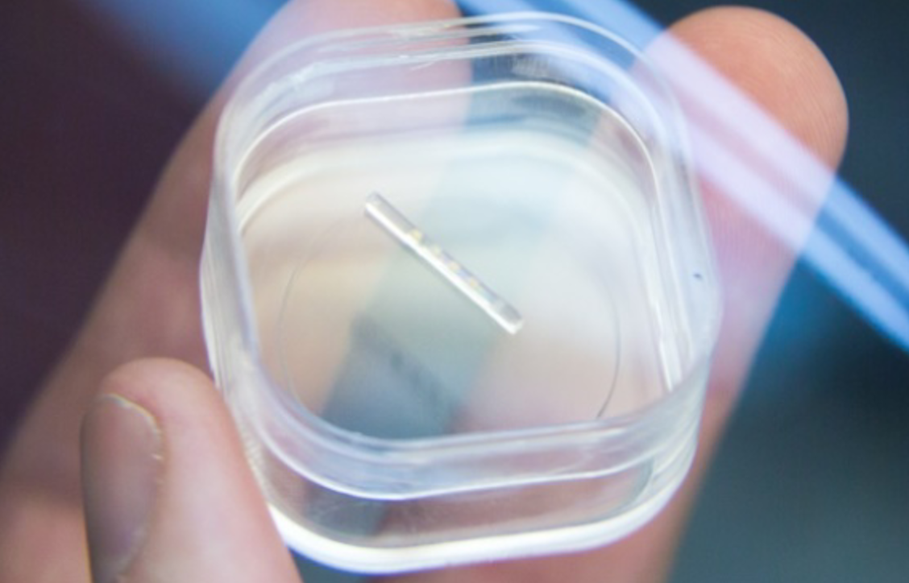
Towards a Fully Integrated Accelerator on a Chip: Dielectric Laser Acceleration (DLA) From the Source to Relativistic Electrons
We discuss steps towards building a fully functional laser-driven particle accelerator on a chip, including a systematic overview of all necessary components and recent advances.
Kent Wootton, ... , Tyler W. Hughes, et al.
International Particle Accelerator Conference (2017)
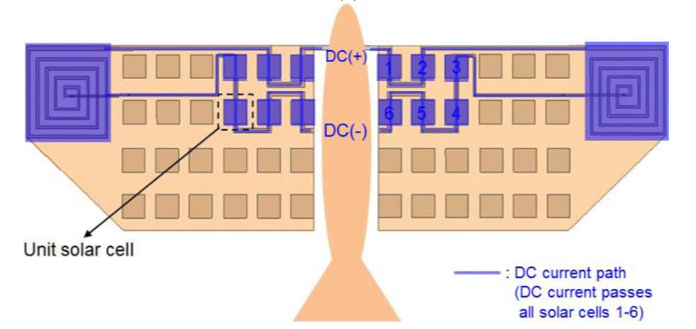
Flexible Antenna Integrated With an Epitaxial Lift-Off
Solar Cell Array for Flapping-Wing Robots
To demonstrate the applications of lightweight, thin film optoelectronic devices, we integrate a flying robot with thin-film, III-V photovoltaics, which are used for both power and wireless communication.
Jungsuek Oh, Kyusang Lee, Tyler W. Hughes, Stephen Forrest, and Kamal Sarabandi
IEEE Transactions on Antennas and Propagation (2014)
Side Projects
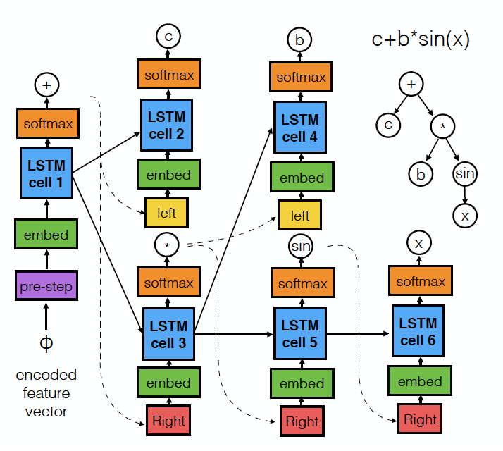
Symbolic Regression
An approach to predicting the equation underlying a set of data points using deep learning. Our method uses a CNN to encode the dataset into a feature vector. Then we use an LSTM network to decode a binary tree representing the predicted equation.
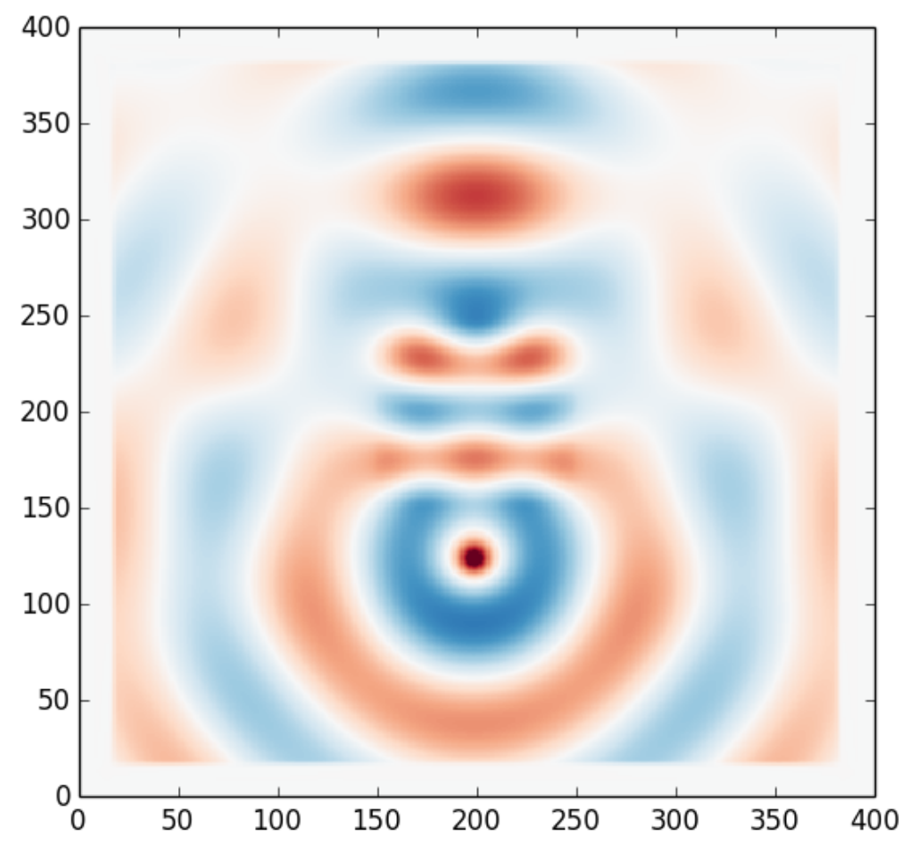
Photonics Simulation Software
I've written several pieces of numerical software for photonics, including the finite-difference frequency-domain (FDFD) and time-domain (FDTD) methods in a variety of programming languages.
show more
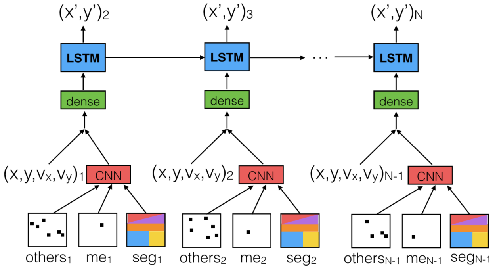
Trajectory Tracking
Trained LSTM to predict trajectories of pedestrians in a busy space. Incorporated labeled scene images and information about other pedestrians. Final project for Stanford CS230 (Deep Learning).
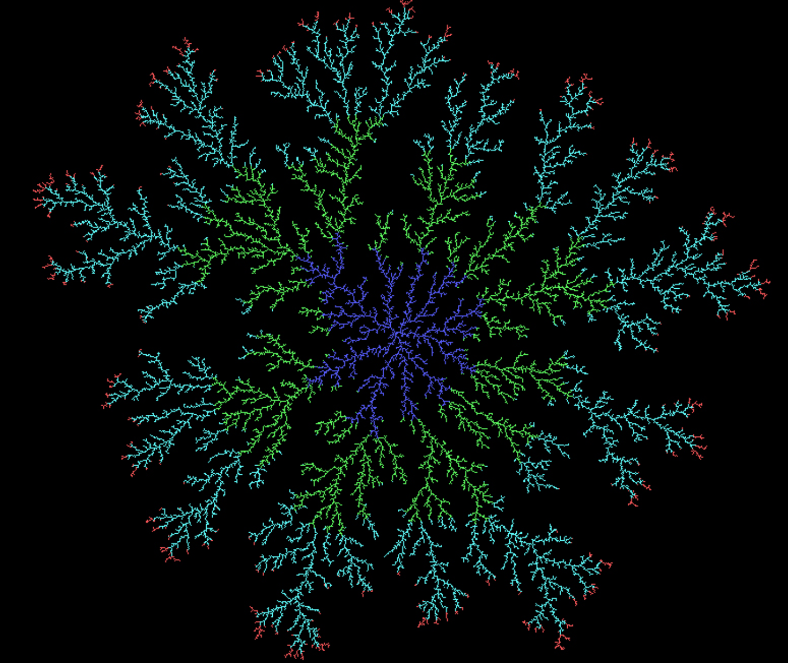
Diffusion Limited Aggregation
Here is a JavaScript implementation of diffusion limited aggregation I wrote that runs in the browser.
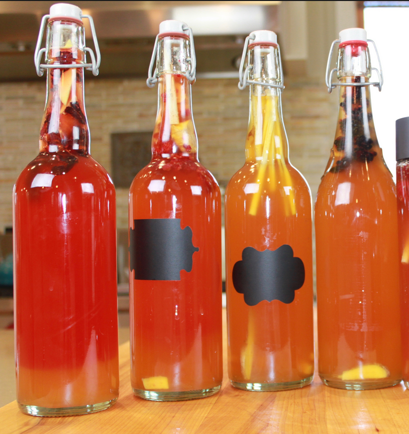
Kombucha Analytics
A few years ago, a friend and I started working on a Django app that allows people to keep track of their kombucha recipes. Eventually, we would like to include the ability for users to share and perform data analytics on the recipes.
Courses taken (S = Stanford, M = Michigan)
Machine Learning / Statistics:
- (S) CS 229 Machine Learning
- (S) CS 221 Artificial Intelligence
- (S) CS 230 Deep Learning
- (S) CS 20 TensorFlow for Deep Learning Research
Computer Science :
- (S) CS 106B Programming Abstractions
- (S) CS 107 Computer Organization & Systems
- (S) CS 42 Contemporary JavaScript
Numerical Methods / Mathematics:
- (S) EE 263 Linear Dynamical Systems
- (S) EE 261 Fourier Transform & Applications
- (M) PHYSICS 211 Computational Physics
Photonics:
- (S) EE 234 Photonics Laboratory
- (S) EE 236B Guided Waves
- (M) EE 336 Nanophotonics
Nonlinear Dynamics / Complexity:
- (M) PHYS 413 Nonlinear Dynamics & Chaos
- (S) CMPLXSYS 511 Theory of Complex Systems
- (M) CMPLXSYS 535 Theory of Social and Technological Networks
Physics:
- Quantum Mechanics (through quantum field theory I)
- Electricity and Magnetism (through graduate level)
- Classical Mechanics (through graduate level)
- Statistical Mechanics (through graduate level)
- (S) PHYS 211 Continuum Mechanics